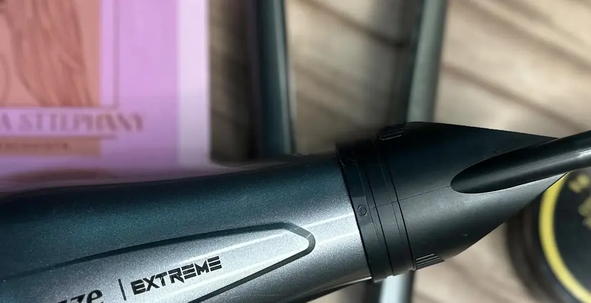

Byanca SttephanyCABELOS · ITABIRA/MG
Escovas, selagem e tratamentos capilares.
Studio e domicílio
- Avaliar no GoogleLeva 1 minuto e ajuda muito o meu trabalho
- Agendar meu horárioPelo WhatsApp · (31) 98693-7384
- Instagram@byancasttephany__
- Como chegar ao studioSão Cristóvão · Itabira
Pagar com PixChave CPF · Nubank
117.688.186-81
Confira se aparece o nome da Byanca antes de confirmar.
Resultados de clientes
Toque para ver em tela cheia. Resultados variam de pessoa para pessoa.
Bom saber
Cabeleireira a domicílio
Levo beleza com conforto até o seu lar.
Atendimento a domicílio com taxa de deslocamento.
No meu studio
Rua Gato, 26, São Cristóvão, Itabira/MG.
Horário
- Segunda
- 13h às 18h
- Terça a sexta
- 7h às 19h
- Sábado
- 9h às 17h
- Domingo
- Fechado
Serviços
- Escova e prancha
- Selagem sem formol
- Terapia capilar
- Hidratação e cronograma
Provérbios 16:3
Byanca Sttephany Cabelos · Itabira/MG
Desenvolvido por Marcelo Ribeiro